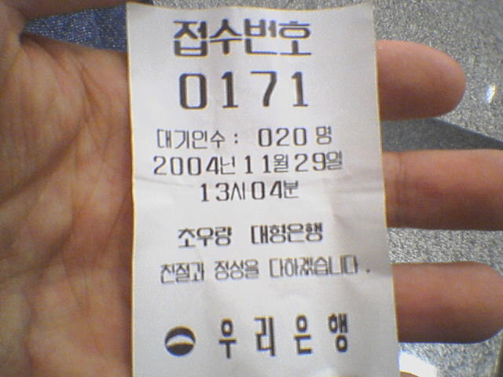

[누구나 한번쯤은 본 적 있는 은행 번호표. 뭔가 이상하다??]
언제 부턴가 은행에 들어가면 번호표 부터 뽑는다.
잘 만들어진 한줄서기 시스템이다.
번호표 기계에 가보면 뽑아가라고 번호표 한장이 주욱 나와서 기다리고 있다.
한장 뽑아서 내용을 보자. (두장 뽑아도 된다. 아무 일 안생긴다.)
1. 접수번호.. 이건 그냥 순서대로 나오는 번호지.
2. 대기인수.. 내 앞으로 몇명이 대기중인지 나오는거다. 처리중인 마지막 번호와 내 번호의 차이.
3. 발권일시.. 내가 번호표를 뽑은 시간.
자. 이렇게 세가지 정보가 담겨 있다.
어차피 표 뽑아서 가져오면 접수번호만 갖고도 뺄셈 한번만 하면 대기인수가 나오고 시계 한번만 보면 현재 시간은 알 수 있는데 말이다. 참 친절하기도 하지.
어라? 그런데 뭔가 이상하지 않은가?
이상하지 않다고?
정말로?
2번 대기인수와 3번 발권일시를 보라구!!
번호표 뽑는 기계에는 내가 뽑기 전에 이미 번호표가 나와 있었단 말이다!!
아직도 이해가 안된다면 차근차근 생각해보자.
내가 지금 뽑은 번호표가 도대체 언제 인쇄된걸까?
확실한건 내가 뽑는 순간은 아니라는 거다.
빙고.
그래. 내 앞사람이 번호표를 뽑고나서 곧장 인쇄된거지.
결국 거기 찍혀 있는 '현재 대기인수' 는 내 앞사람을 기준으로 계산한 대기인수이고 '발권일시' 는 내 앞사람이 표를 뽑아간 시간이라는거다.
만약 내 앞사람과 표를 뽑은 시간 차이가 좀 커진다면.
난 전혀 엉뚱한 정보를 받아보게된다.
그게 뭐가 어때서?
그냥... 기다리느라 심심했어. -_-..